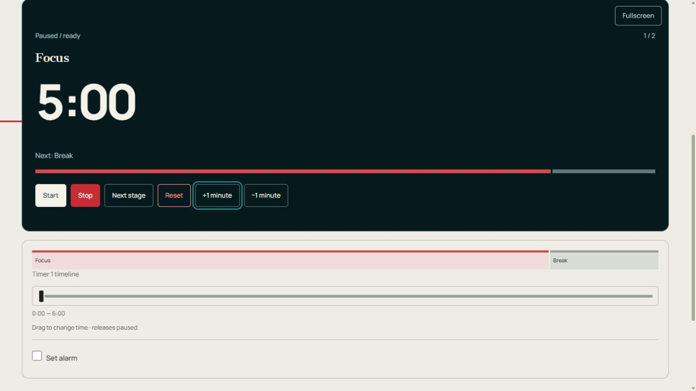

Make your own timer
Your slots. Your signals. Your pace. Create a sequence, independent clocks or player time banks.
Edit your setup below, then save it as a custom timer.
How it works and advice
How the Custom Timer works
Build a timer with named slots, independent clocks or player time banks.
Set up and run the timer
- Open Customize → Edit to review the foundation, clocks and slots. Name the cards for your people, dishes, samples or jobs.
- Tap a duration number for the circular dial. Turn clockwise to add time or counterclockwise to subtract, then Apply. You can also type a number. Close discards the dial draft.
- Edit this clock & lap record changes one paused card. Edit timer changes the shared setup and rebuilds the board when you Apply changes; export readings first.
- Start individually or Start all together. Next stage ends a slot early. In manual mode the clock waits at zero; choose Next stage, then Start.
- Drag the timeline below a clock to correct elapsed time. Release leaves that clock paused. Check the position, then Resume.
Controls at a glance

- Start / Pause — Run or hold this card only.
- Stop — Pause without clearing elapsed time.
- Next stage — Finish the current slot early and move to the next.
- Reset — Clear this card’s run and return to its first slot.
- Start / Pause / Resume
- Runs or pauses this card only. Paused time is excluded.
- Stop
- Pauses this clock without clearing elapsed time.
- Next stage
- Finishes this slot early. The next slot runs if the card was running, or stays paused if it was paused.
- Reset
- Restores this card’s first slot and clears its elapsed time and laps. Other cards are unchanged.
- +1 minute / −1 minute
- Changes this slot’s length by 60 seconds; the stored template is unchanged.
- Start all / Pause all
- Starts eligible cards together or holds the board. In turn mode only the first player starts. These are under Customize on single-clock pages.
- Add clock / Remove clock
- Adds a copy of the first setup, up to 12 cards. Remove clock is inside Edit this clock & lap record; stop the card first.
- Export CSV
- Downloads current stage and elapsed seconds for every card, plus recorded lap totals and splits. This snapshot is not a full stage history or reusable setup.
- Sound on / Sound off
- Toggles stage sounds and reminders. The handoff tick and extra alarm have separate switches.
- Fullscreen / Fullscreen board
- Enlarges one dark clock or the complete board. Leave with Exit fullscreen or Escape where supported.
- Timeline
- The strip inside the clock displays progress. Drag the separate slider below it to correct elapsed time; release pauses this card.
- Set alarm / Alarm at / Test alarm
- Enable an extra bell, drag Alarm at to an elapsed-time position and test it. This bell has its own switch, separate from stage sounds and Stage transition tick. Keep the tab open.
- Stage transition tick
- Turns the short handoff click on or off separately from stage alarms.
Settings and saved setups
- Customize / Edit / Edit timer
- Customize opens the tools. Edit opens the full editor. Pause all clocks before applying a new setup; Apply changes rebuilds the board, so export readings first. Cancel closes the editor.
- Templates / Original setup / Short practice / Create template
- Templates belong to this timer. Original setup restores its starting plan. Short practice supplies shorter editable slots. Create template opens the editor; enter a name and Save current as template to keep your plan.
- Save as custom timer / Duplicate / Save / Cancel
- Save as custom timer gives your plan a name in My timers under the account control. Duplicate saves a separate copy. Save commits the name; Cancel closes the naming form.
- Timer name / Foundation / Clocks / players / Illustration
- Choose sequential countdowns, independent count-up clocks or player time banks, with 1–12 cards. Illustration chooses artwork for a custom timer.
- Add slot / Move up / Move down / Remove
- Build and reorder the slot list. Keep at least one slot. Seconds is its duration; Instruction / water amount / checkpoint displays a note on the clock.
- Advanced: preparation, rest, repeats & sound
- Prepare and Rest insert extra slots in seconds. Repeat sequence repeats the plan. Display chooses down or up within a slot. Move to next slot automatically controls handoff at zero.
- Slot signals
- At start and At end choose a sound per slot. Warning is seconds remaining; Reminder every is elapsed seconds between repeated cues. Zero disables a warning or reminder. Phase color marks work or rest.
- Sound enabled / Volume / Sound when recording a lap / Quiet ticking during final 10 seconds / Hide clock digits
- Controls stage sound, its volume, optional lap clicks, final ticking and numeric display. Stage transition tick and Set alarm have separate switches.
- Outlined star / Make start timer
- The star adds this page to the favorites row on the main page and other timers. Press it again to remove it. Make start timer chooses the timer that opens from the home page.
- Sign in with Google / Sign out / My timers / Load synced settings
- The account control signs in or out. My timers lists saved custom timers. Load synced settings loads received account changes; pause a running timer first.
Example: a reusable work-and-break plan
Choose Sequential slots / countdowns, one clock and Focus 300 seconds plus Break 60. Under Advanced set Repeat sequence to 3 and Apply changes. This makes 18 minutes. Save as custom timer gives it a name in My timers; Duplicate keeps a separate version.
Other ways to use it
- Independent clocks for several people
- Player time banks for a group game
Saving, sound and browser limits
Settings, named templates, custom timers and favorites save in this browser. Sign in with Google at the top right to sync saved setups. If Load synced settings appears, pause before loading. Saved-setup sync does not synchronize live clocks across devices.
Keep this tab open and test sound on the device you will use. Phones and browsers can delay alarms in background tabs or while locked. Reload restores saved clocks paused; closing the page does not keep a live alarm running.
Export readings before Reset, removing a card or applying another plan. CSV is a snapshot; automatic local saves are not a permanent results archive.
A custom copy preserves editable slots and sounds. Specialized views such as the breathing animation and speech lights belong to their original timer page.